Candidate List 20261021Last night — ZTF: 1,682 passed basic cuts (22 young) · LSST: 0 passed basic cuts (0 young)Previous Day Next Day
Section 1: New Sources (age<1d) Section 2: Old (1-5d) sources observed last nightplaceholder
Section 1: New Afterglow/FBOT Cands Last Night (0)
Section 2: Older Sources Observed Last Night (7)
0. [ZTF] ZTF26acbujyo (FBOT?) [Back to Top] [Share] [Trigger Swift] [Fritz Alert] [Fritz Source] [Lasair]RA, Dec: 47.90869, -2.02672 3h11m38.09s, -2d-1m-36.18sGalactic (l, b): 182.1716, -48.09619 ext(g-r) = 0.069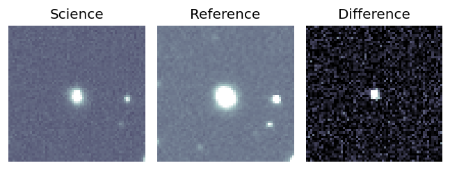
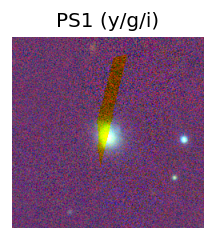
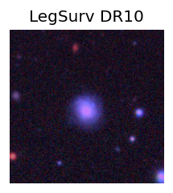
TESS: Sectors [ 4 31 109]
NED host (10 arcsec):Found KUG 0309-022 (G, 1.8″); NED spec-z: z=0.0573 [zflag SUN]; peak abs mag = -19.52
PS1: 0 sources in 3 arcsec
LegacySurvey: 1 sources in 3 arcsec Closest: d = 1.24 arcsec, 22.0 deg (east of north) photoz=0.07 (68% bounds 0.01, 0.09), type=SER peak abs mag (ext. corrected) = -19.94 (68% bounds -16.49, -20.48)
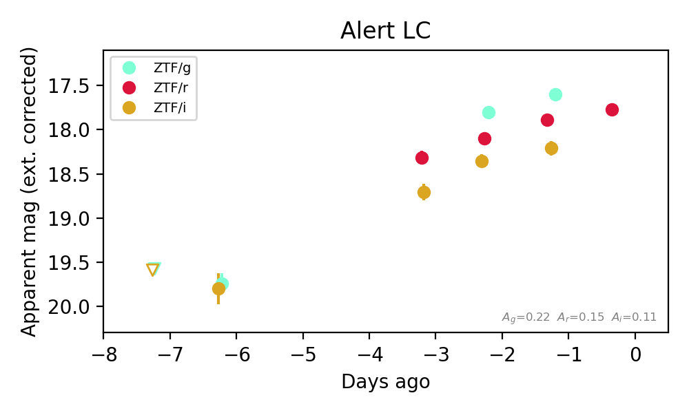
Extinction-corrected gr color:
From alerts: -0.29 +/- 0.09 mag
Extinction-corrected gi color:
From alerts: -0.61 +/- 0.11 mag
Extinction-corrected ri color:
From alerts: -0.32 +/- 0.1 mag
Rise Rate:
g: 0.43 mag/day
r: 0.2 mag/day
i: 0.31 mag/day
Fade Rate:
1. [ZTF] ZTF18admfyew (FBOT?) [Back to Top] [Share] [Trigger Swift] [Fritz Alert] [Fritz Source] [Lasair]RA, Dec: 276.88126, -20.97612 18h27m31.50s, -20d-58m-34.02sGalactic (l, b): 11.58511, -4.39791 WARNING: 2.31 deg from ecliptic plane ext(g-r) = 0.88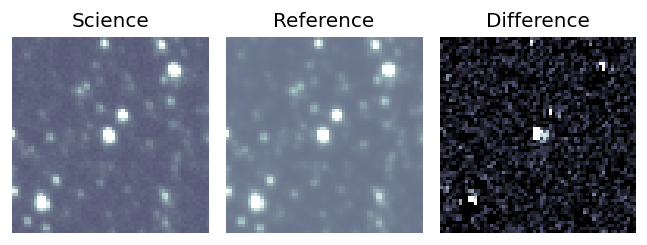
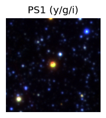

TESS: Sectors [ 91 92 116]
PS1: 1 source in 3 arcsec Closest: d = 0.52 arcsec photoz=0.14+/-0.01 peak abs mag = -23.88
LegacySurvey: 0 sources in 3 arcsec
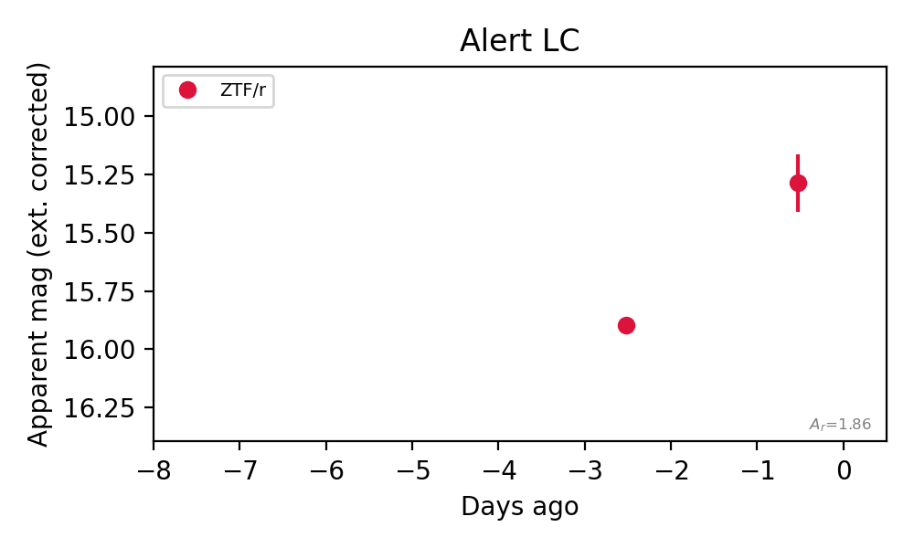
Rise Rate:
r: 0.3 mag/day
Fade Rate:
2. [ZTF] ZTF26acbxbrb (Afterglow?) [Back to Top] [Share] [Trigger Swift] [Fritz Alert] [Fritz Source] [Lasair]RA, Dec: 320.80653, 42.94047 21h23m13.57s, 42d56m25.68sGalactic (l, b): 87.50657, -5.16427 ext(g-r) = 0.506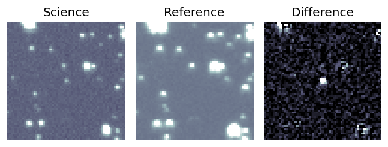
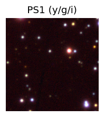

TESS: Sectors [ 15 16 55 56 76 82 83 121]
PS1: 1 source in 3 arcsec Closest: d = 5.47 arcsec photoz=0.61+/-0.08 peak abs mag = -25.27
LegacySurvey: 0 sources in 3 arcsec
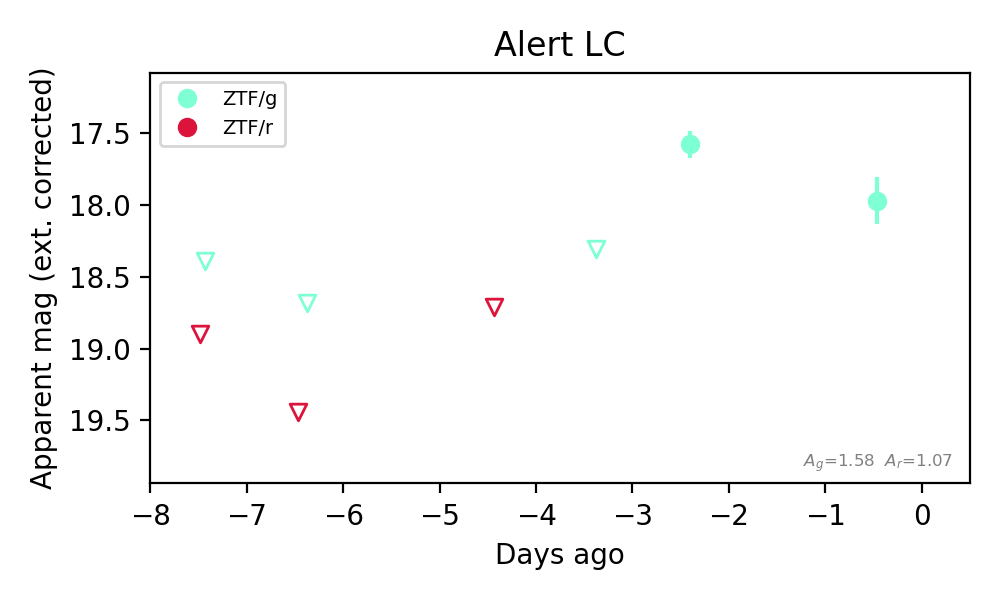
Rise Rate:
g: 0.75 mag/day
Fade Rate:
g: 0.2 mag/day
3. [ZTF] ZTF26accjfeo (FBOT?) [Back to Top] [Share] [Trigger Swift] [Fritz Alert] [Fritz Source] [Lasair]RA, Dec: 20.25601, 25.50915 1h21m1.44s, 25d30m32.93sGalactic (l, b): 131.28404, -36.88232 ext(g-r) = 0.145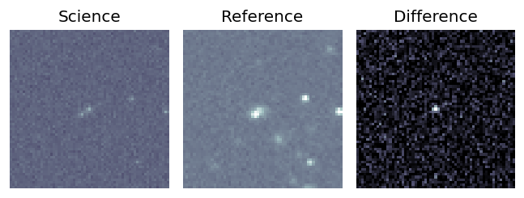
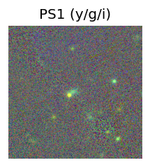
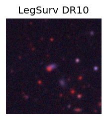
TESS: Sectors [17 57 84]
SDSS (<15 kpc):Found SDSS phot-z: z=0.51; peak abs mag = -22.72
PS1: 0 sources in 3 arcsec
LegacySurvey: 1 sources in 3 arcsec Closest: d = 1.48 arcsec, 222.3 deg (east of north) photoz=1.05 (68% bounds 0.77, 1.28), type=PSF peak abs mag (ext. corrected) = -24.64 (68% bounds -23.79, -25.16)
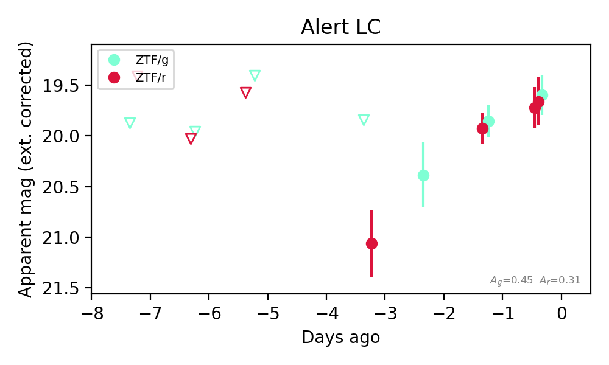
Extinction-corrected gr color:
From alerts: -0.1 +/- 0.25 mag
Consistent with synchrotron, g-r>0!
Rise Rate:
g: 0.37 mag/day
r: 0.45 mag/day
Fade Rate:
4. [ZTF] ZTF26accmhxg (FBOT?) [Back to Top] [Share] [Trigger Swift] [Fritz Alert] [Fritz Source] [Lasair]RA, Dec: 20.53099, 23.45902 1h22m7.44s, 23d27m32.48sGalactic (l, b): 131.98178, -38.8729 ext(g-r) = 0.069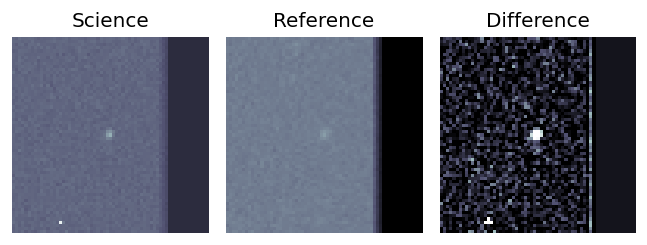
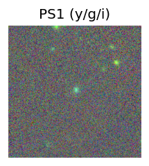
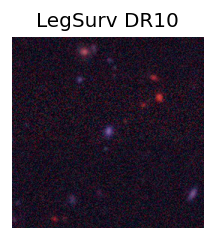
TESS: Sectors [17 57 84]
SDSS (<15 kpc):Found SDSS phot-z: z=0.22; peak abs mag = -20.80
PS1: 0 sources in 3 arcsec
LegacySurvey: 1 sources in 3 arcsec Closest: d = 0.41 arcsec, 309.2 deg (east of north) photoz=0.16 (68% bounds 0.11, 0.23), type=SER peak abs mag (ext. corrected) = -20.04 (68% bounds -19.23, -20.91)
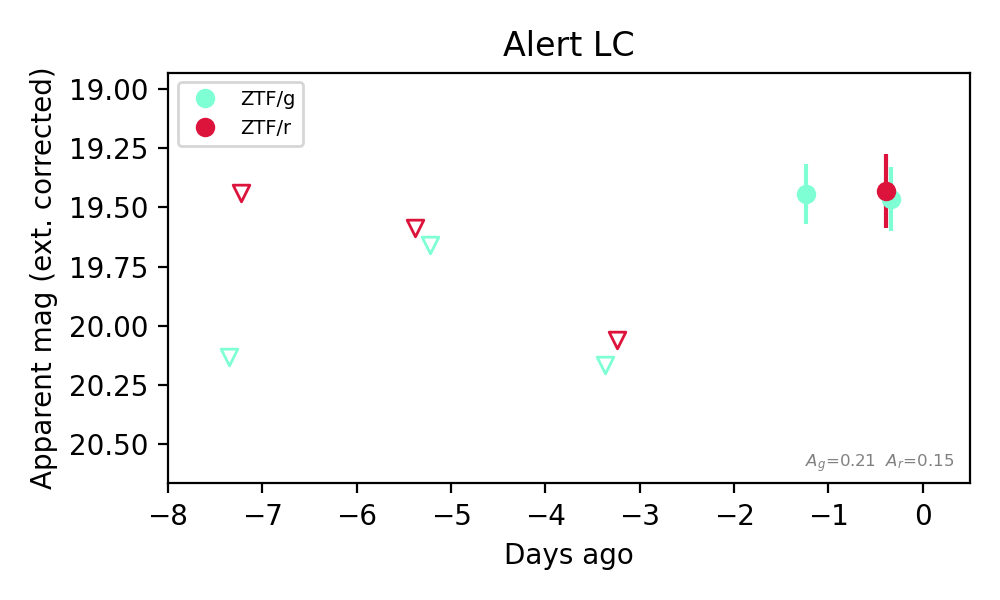
Extinction-corrected gr color:
From alerts: 0.03 +/- 0.21 mag
Consistent with synchrotron, g-r>0!
Rise Rate:
g: 0.34 mag/day
r: 0.22 mag/day
Fade Rate:
5. [ZTF] ZTF26accpume (FBOT?) [Back to Top] [Share] [Trigger Swift] [Fritz Alert] [Fritz Source] [Lasair]RA, Dec: 330.03232, 39.93984 22h 0m7.76s, 39d56m23.41sGalactic (l, b): 90.73511, -11.9889 ext(g-r) = 0.259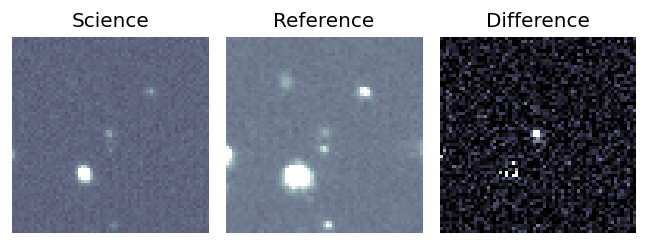
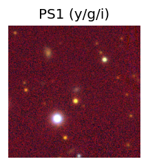

TESS: Sectors [ 16 83 121]
PS1: 1 source in 3 arcsec Closest: d = 0.82 arcsec photoz=0.27+/-0.03 peak abs mag = -22.25
LegacySurvey: 0 sources in 3 arcsec
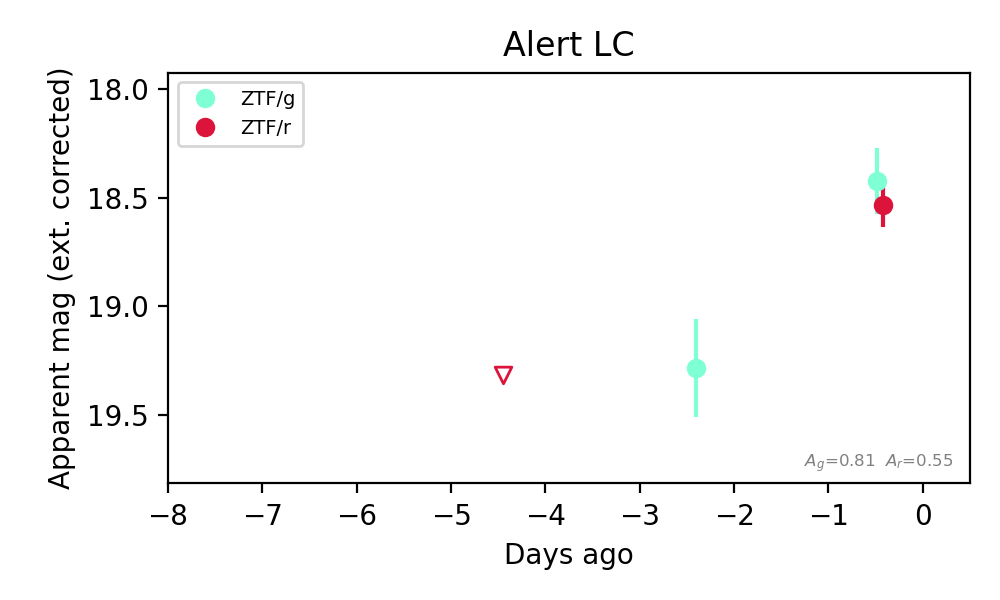
Extinction-corrected gr color:
From alerts: -0.11 +/- 0.18 mag
Consistent with synchrotron, g-r>0!
Rise Rate:
g: 0.45 mag/day
r: 0.19 mag/day
Fade Rate:
6. [ZTF] ZTF26accshgr (Afterglow?) [Back to Top] [Share] [Trigger Swift] [Fritz Alert] [Fritz Source] [Lasair]RA, Dec: 17.09758, -25.00276 1h 8m23.42s, -25d 0m-9.95sGalactic (l, b): 184.70132, -85.64027 ext(g-r) = 0.016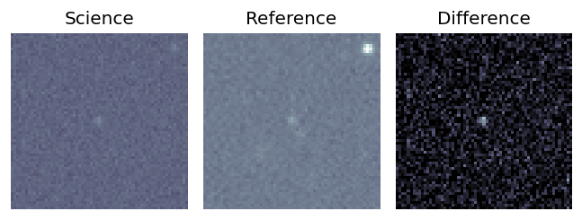
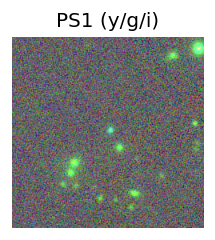
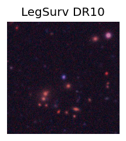
TESS: Sectors [ 3 30 107]
PS1: 0 sources in 3 arcsec
LegacySurvey: 1 sources in 3 arcsec Closest: d = 0.46 arcsec, 315.2 deg (east of north) photoz=0.13 (68% bounds 0.11, 0.16), type=REX peak abs mag (ext. corrected) = -19.49 (68% bounds -19.08, -20.08)
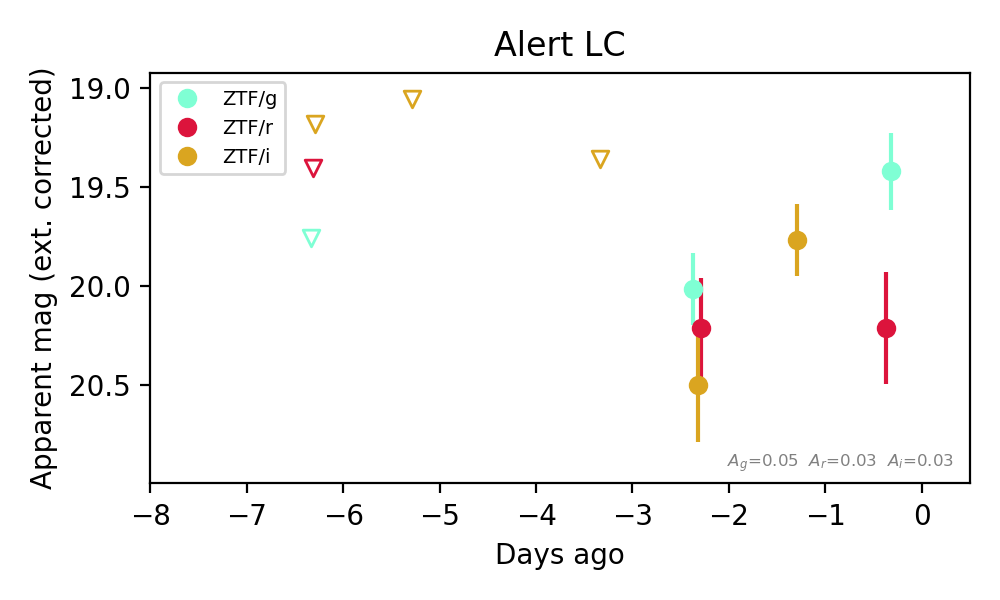
Extinction-corrected gr color:
From alerts: -0.79 +/- 0.34 mag
Extinction-corrected gi color:
From alerts: -0.48 +/- 0.35 mag
Extinction-corrected ri color:
From alerts: -0.29 +/- 0.38 mag
Consistent with synchrotron, g-r>0!
Rise Rate:
g: 0.29 mag/day
i: 0.71 mag/day
Fade Rate: